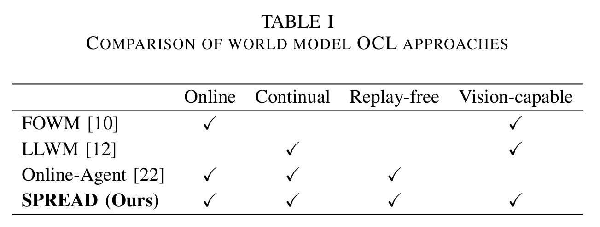
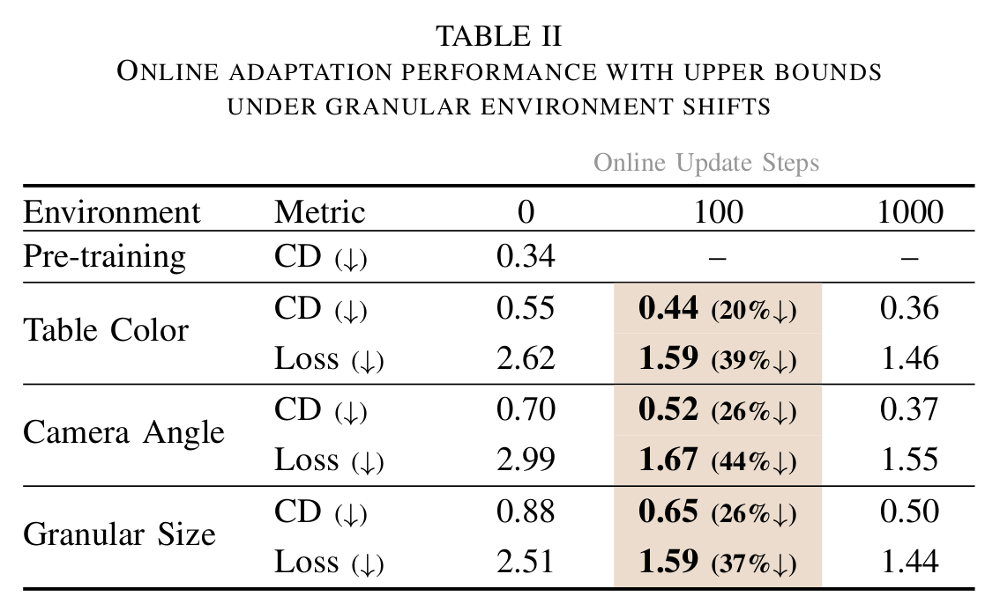
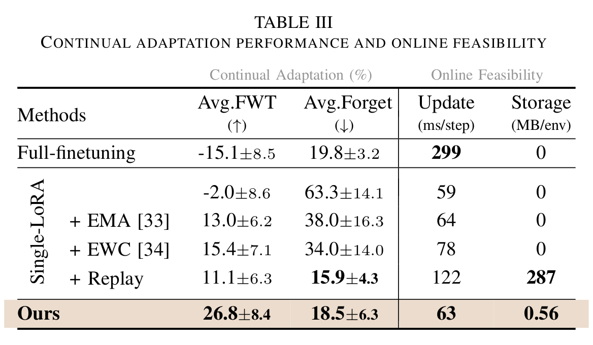
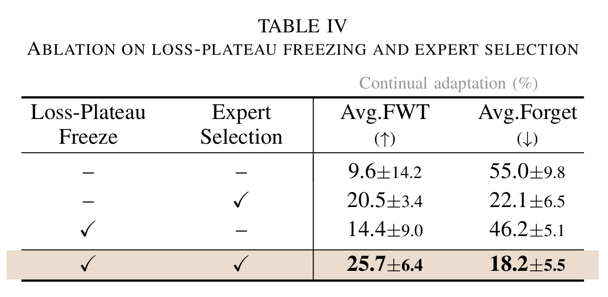

Problem Scenario

Autonomous robots must be capable of adapting not only to training datasets but also to unfamiliar environments. World models, which learn predictive dynamics of the environment, have been proposed to overcome the task-specific limitations of conventional reinforcement learning. However, their capability is typically restricted to training distributions. We introduce SPREAD, the first framework that enables a pre-trained world model to learn environmental changes online and continuously. SPREAD freezes the pre-trained model and updates only a set of LoRA adapters, jointly achieving real-time adaptation, robustness to forgetting without a replay buffer, and forward transfer. Experiments show that SPREAD substantially reduces prediction loss under diverse visual and dynamical changes, improves task success, and remains effective in continual learning settings. By extending pre-trained world models to online continual learning, this work highlights a scalable path toward world models that autonomously adapt to real-world dynamics.

Comparison of world model OCL approaches.


Granular: Pre-training Env

Granular: Table Color

Granular: View Angle

Granular: Granular Size

PushT: Pre-training Env

PushT: Background Color

PushT: Block Color

PushT: Block Shape
Image Goal

CD 0.35

CD 0.5

CD 0.7

Granular Environment Chamfer Distance

PushT Environment Success Rate

Performance under granular environment shifts.

Continual adaptation performance and online feasibility.

Ablation on loss-plateau freezing and expert selection.
@article{anonymous2026spread,
title={SPREAD: Scalable Pre-trained World Model for Adaptive Dynamics Model},
author={Anonymous Authors},
journal={Under Review},
year={2026}
}